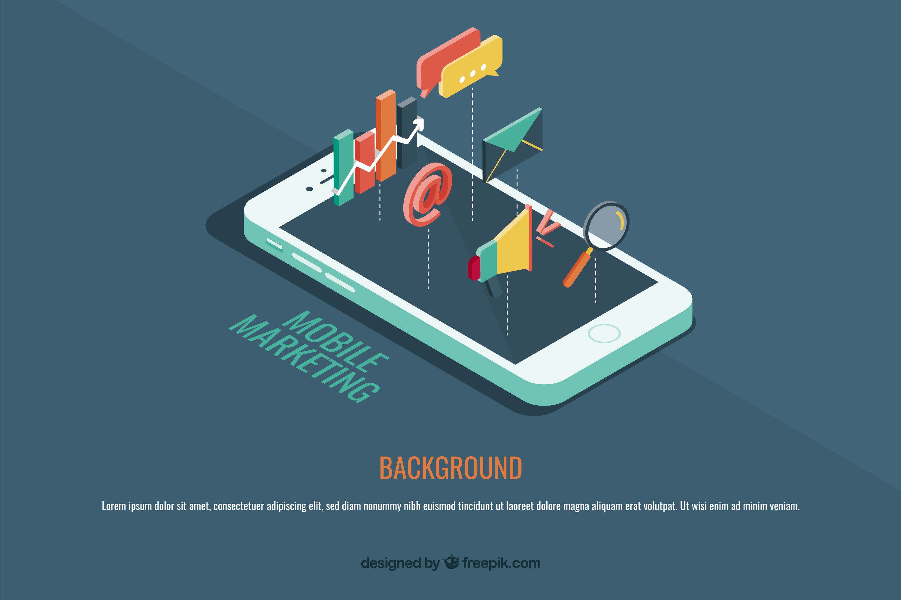

SEO
Ser bueno es primodial, tener visibilidad lo es todo.
Destacas por los servicios que ofreces, por el tiempo de resupuesta que das a tús clientes.
Destacas por los precios sobre tú competencia.Y si aún así no destacas tú página web en los buscadores más importantes estás perdiendo posibles clientes.

Nuestro equipo de posicionamiento te hará el mejor trabajo acorde a tus necesidades, aumentar tráfico a la pagina, aumentar ventas, mayor visibilidad en redes sociales. Y de manera realista te indicará el tiempo en que se podrán observar los objetivos acordados.
Cómo trabajamosOptimizar web
Analizamos los componentes de la web etiquetas,imágenes,descripciones y las ajustamos de modo que sean eficientes acorde a las reglas de posicionamiento.
Analizar los principales competidores
Buscamos las palabras clave que utilizan para mejorar el posiconamiento, los enlaces a paginas relacionadas con la temática de la web, de manera que comprendamos qué es lo que hace que tengan mejor posicionamiento que su página.
Conseguir enlaces de calidad
Tener muchos enlaces en tú web mejora el posicionamiento y si estos enlaces son de paginas de calidad, bien posicionadas, más aún.
Mejoramos el contenido
Redactamos el contenido para que sea más atractivo a los usuarios. Así como mantener ciertos cambios recurrentes en la página le aporta dinamismo y mejora su posicionamiento. Todo ello teniendo en cuenta el mercado en el que se encuentre o al que se quiera expandir. De forma que si el objetivo es el mercado oriental los buscadores en los que centraremos el posicionamiento serán